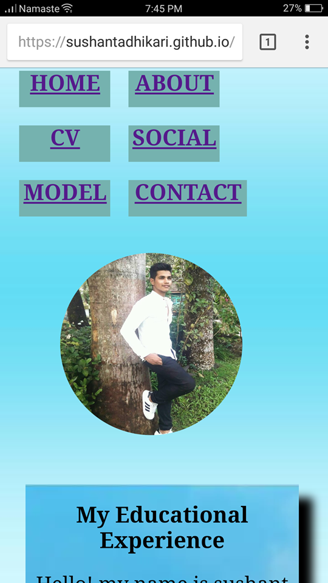
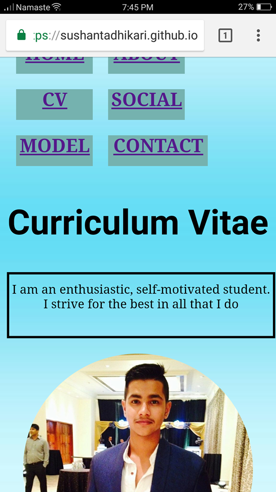

Introduction
This is our first web page assignment of term one. In this assignment we used HTML and CSS. It is a solo assignment so, I used my own technique and design to complete the assignment. In term one we were taught about creating web page by using Html and CSS only so, in my web page no any ohter tools like javascript is used to complete it. According to the the assignment we must create 6 web pages linked with each other. We must'nt copy any others design. We should use our own design and technique. All the web pages must be responsive which can be view properly from any other media devices. The web pages seem to be attractive for the good grading. It was very difficult to create a good web pages so I learned from diiferent tutorial website of making web pages. I learned different techniques to create it and make it more attractive. Advanced CSS are used in it. Many information were gained from the friends also but not copied from them. First, the wireframes of web pages were made to analyze how to make it. Then using HTML and CSS properties it was desigend in my computer using tool sublime text. CSS properties like flex, border-radius, border style, box-shadow properties were used. Many problems were faced during creating web pages like, the points to be written were not in order so margin-left, margin-right were used to solve that and make it in proper order. As all the web pages were created it sould be kept on Github by making our own repository for making it view from any other devices also. Like this I created my web page about personal informationn.
Wire-Frames
Analysis and wireframes should be done before creating the webpages. First of all, I thaught about the design that should be done in web pages and made some sample wirerames of each web pages, all about the logo, images, description, header part, section part and footer part. After the wireframes are made, web pages were start to create. The pictures of wireframes are given below:
Design (Mock-ups)
Design of the web pages are made for different media devices. disscussing about the desogn the header and footer part of all the web pages are same, only the section part is different. For the home page a quote is written in the section with a blue coloured background. For about page the is picture of mine in the top and below that tow boxes are created where one id described about my educational experience and other discribes my experience in web page. Design for hand mobiles , contents are made smaller to look proper and make it good responsive design. cv page i a box all my personal information, education level and skills are given. in social page all my websites are given where users can follow. In contact page contact detail is given in top bos and in second box user's information are asked making a form and at bottom a map is given where anyone can find us. Designs for desktop and mobiles of all the pages are given below:
Design for desktop
Design for palmtop


Validation
All the html and css file are been validate after complting it. the images of validation of html and css are given below:
Link
Conclusion
Therefore, after completing this project I have been able to create a simple website. I got many knowledge about HTML and CSS after doing this project. Doing this project increased my level of finding research. So, from now it will be easy for me to do this type of project.